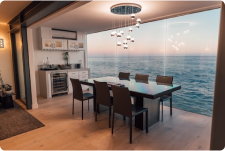
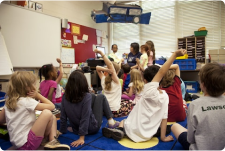
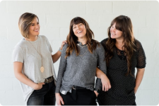

Lihat Semua Topik
Bacaan Populer
#1
27 Feb 2023
Mendekati AI yang Mampu Belajar Sendiri: Pengembangan Algoritma
Pembelajaran Mesin yang Efektif
Rochel Foose
#2
27 Feb 2023
Perkembangan Terbaru dalam Teknologi 5G: Masa Depan Koneksi
Internet yang Lebih Cepat dan Andal
Wade Warren
#3
05 Jan 2023
Dampak Stres pada Kesehatan Mental dan Strategi Mengelolanya
dalam Kehidupan Sehari-hari
Eduardo
Rekomendasi Penulis
Semua Bacaan

09 Jun 2023
Internet of Things (IoT) dan Masa Depan Keterhubungan dalam
Kehidupan Sehari-hari
02 Jun 2023
Mengembangkan Keterampilan Berpikir Kritis melalui
Pendidikan: Strategi dan Implementasi di Kelas
15 Agu 2023
Inovasi Teknologi Big Data: Menggali Wawasan dan Mendukung
Pengambilan Keputusan yang Efektif

Chance Vaccaro
27 Mar 2023
Desain Interior Ramah Lingkungan: Pendekatan Green Design
dalam Menciptakan Ruang yang Berkelanjutan

 Darrell Steward
Darrell Steward
23 Jan 2023
Pendidikan Karakter: Membangun Nilai-Nilai Etika dan Moral
pada Anak-anak

Savannah Nguyen
13 Apr 2023
Peran Penting Kepercayaan Diri dalam Pengembangan Pribadi
dan Profesional
Rekomendasi Penulis